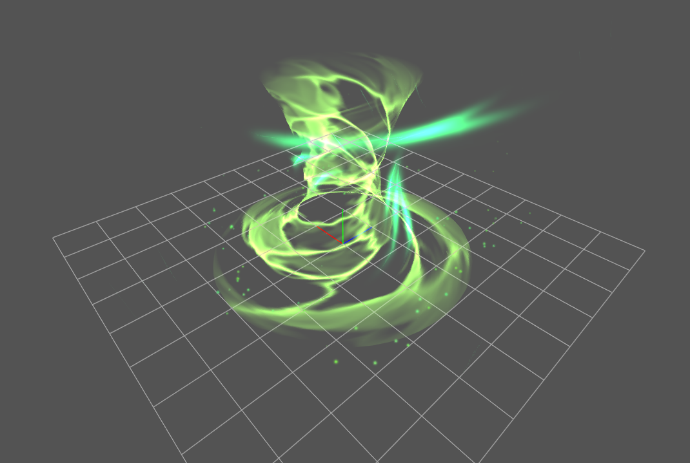

14. Let's configure levels of details¶
Overview¶
Levels of Details enable artists to create effects which make effecient use of system resources and screen space depending on distance to the camera.
In this article we will examine sample file Aura01.efkefc.
You can download it here
In the given effect we can see a node called Particle.
It generates small particles which fly from the base of the tornado to the top.
When camera is close to the effect these particles are visible and add nice
details to the effect.

However, when camera is far you almost cannot see them because they're quite small, but they still need to be calculated and processed each frame of the simulation. This is a great case of Levels of Details, since it allows to simplify effects based on the distance. So that effect node can be hidden or shutdown completely when effect is far from the viewer.
Levels Setup¶
Let's get started with configuring levels we're going to use. Navigate to Menu > Levels of Details.
In this panel you specify enabled levels of details and distances from which each level is enabled. Level 0 is the base level which always starts from distance 0 and is used when there is no other level which can be selected. You can use up to 4 levels in one effect.
Let's enable Level 1. By default it will have minimum distance set 16, which is fine for our case. You can freely set minimum distances of levels to any value which is not smaller than previous level and not greater than next level.

Now you can try to change camera position using mouse wheel in the Editor
and you will see that Current LOD in lower right corner of the player changes
to 1 when distance to the effect is greater than 16.
Configuring Particle Node¶
As you might have noticed, after you've enabled second level each colored button in the node hierarchy now shows two lines, one for each level. It displays levels on which each effect node is enabled. By clicking this button you can change selected levels for each node
Let's click on this button near our Particle node.

Here you can select levels on which this node is enabled and behaves as usual.
By default each node is enabled on all levels, but we want to disable Particle node
on level 1, so let's uncheck that level.
Below levels selection you can change the behaviour of the node which takes effect when current LOD is not selected. There are three available types of behaviours:
Hide Particles - particles continue to spawn and update but they're no longer submitted for rendering. This reduces usage of the GPU but still consumes CPU resources since update is performed.
Stop New Particles Spawn - already spawned particles will continue to update and render but new particles wont be spawned. This allows smooth transition between levels since particles wont be abruptly hidden and will be visible until their end of life.
Stop New Particles Spawn and Hide Existing - combines two of the previous behaviours. New particles wont be spawned and already spawned particle will be hidden. It must be noted that spawned particles will continue to update until their death.
By default Hide Particles is selected.
Let's choose Stop New Particles Spawn and Hide Existing since it's suitable in our case.
Examining Results¶
We're going to verify our configuration by taking a look at statistics shown in the bottom right corner of the viewer.
Current LOD: Level of Detail is currently utilized
D: Draw calls of current rendering.
V: Vertex count of current rendering.
P: Particle count of current rendering.
If we did everything correctly when LOD 0 is active we should see ~115 particles. Then, if you move camera away from effect up to the distance at which LOD 1 is selected we should observe amount of particles gradually going down to about ~15.
Summary¶
You've learned how to setup levels of details and configure effect nodes to change their behavior based on currently active level. It's recommended to setup levels of detail at the last step of your effect production process when you're satisfied with effect look.
Level of Details are quite versatile and can be setup in various ways, you can even completely replace effect at the certain distance by making separate root nodes for different level. Effect optimisation process can be tricky, but sometimes it's what separates the game which barely runs at 30 fps from running at stable 60 fps.